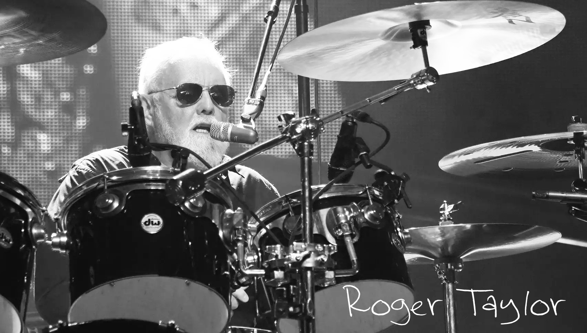
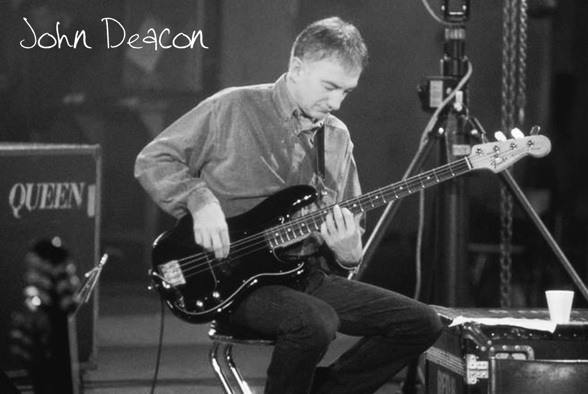

The main "royal" line-up of Queen consisted of four musicians. Freddie Mercury, the frontman and main icon, Brian May, the guitarist who can explain on his fingers why the Sun is a star and not a planet, drummer and dentist Roger Taylor and bassist John Deacon, the humble one to look for. All the members wrote songs for Queen, so everyone has at least one hit, which both fans of classic rock music and music lovers in general are crazy about to this day. We will not list all of them, we will name only the most notable ones.
Farrukh Bulsara, aka Freddie Mercury - was born on September 5, 1946 in Zanzibar. He spent his childhood here, and ended up in London at the age of 16, when his family fled the political unrest in his homeland. He learned to play the piano as a child, but at first he was going to be an illustrator, and even went to college to study it... It looks like we've lost another abstract artist. If he hadn't become a rock music legend (as he always planned), we would certainly have put him on a par with Pablo Picasso.
The musician came up with the pseudonym in 1970, already being a member of Queen. He knew he had to become a rock star, so he was looking for the right image. The name appeared as a simpler alternative to Farrukh. And the surname is a tribute to Mercury, the Roman messenger of the gods. He named the band royally, and himself divinely... modesty, as you know, was not distinguished. And you haven't seen his images yet at the beginning of his career!
Freddie formed Bohemian Rhapsody, Love Of My Life (dedicated to his former lover and close friend Mary Austin), We Are The Champions (because Queen definitely won this life) and Somebody To Love. This ode to despair proves what the quinomaniacs are constantly saying: despite all his sociability and extravagance, Freddie often felt completely lost and very lonely...
And do you know who could always brighten up his loneliness? Kittens. Freddy just loved the tailed ones. They even say that Mr. Bad Guy, that Freddie's solo album, released in 1985, is dedicated exclusively to his furry pets.
We still grieve every November 24th, because it was on this day in 1991 that Freddie lost the fight against AIDS and left this world. The last song he recorded in the studio was Mother Love, and even then the singer didn't have the strength to finish it. At the very end, the voice of Brian May sounds, alive and well, although at that moment extremely sad.
Brian May was born on July 19, 1947. The inexplicability of his appearance in the world of music is comparable only to the mysteries of the universe. No, of course, he had been playing the guitar enthusiastically since childhood, but still he was going to pursue a scientific career anyway, he even graduated from Imperial College and became an astrophysicist... And at the same time, he became famous mainly as the guitarist of Queen.
Brian wrote Keep Yourself Alive, the very first Queen song in general, We Will Rock You, Who Wants To Live Forever and The Show Must Go On (rumor has it that this was one of his last gifts for Freddie). It's funny: the musician may have wondered who would want to live forever, and assumed that no one would, but he immortalized himself in music anyway.
To be fair, Brian is not the only one who has not dreamed of a musical career. The band found Queen's drummer Roger Taylor through an ad when he was studying to become a dentist. He was born on July 26, 1949. As a child, he played everything that came to hand: ukulele, drums, guitar, parental nerves. Yes, for the wonders of multitasking, it's to Roger Taylor. He could and wanted to say so much that, in addition to Queen, he launched the project The Cross, which existed from 1987 to 1993. Here he played rhythm guitar and soloed. He can also be heard in Queen's recordings on early albums.

Thanks to Roger, the band's legacy includes tracks such as A Kind Of Magic, Under Pressure (recorded with David Bowie) and Radio Ga Ga — yes, the one Lady Gaga is named after. The early tracks in which he sings also belong to his authorship. Like Brian, he remains a member of Queen today, touring and does not believe that their glory days are long gone.

But very little is known about where John Deacon is, what he does and what he lives in now. The quietest, most modest participant who does not recognize the attention of the public, the exact opposite of Freddie Mercury, he experienced his departure especially hard. John was born on August 19, 1951. He joined Queen in 1971, last but not least, becoming the youngest member of the band. Nevertheless, they were very hardworking, which immediately caught the eye of Brian and Roger, who had just taken over the duties of recruiters.
John Deacon is the author of such hits of the band as Another One Bites The Dust, I Want To Break Free and Friends Will Be Friends. I want to believe that he really believes in the power of friendship, because it's not entirely clear what his relationship is with the living members of Queen.
In 1992, it was announced that John had left the band, but he still performed at a couple of concerts dedicated to Freddie's memory, and only in 1997 he quit the stage for good. There have been no official statements about conflicts within the team, but John seems to be the least happy about what is happening with Freddie's legacy now. If others just say that the star frontman is irreplaceable, John doesn't even try to prove otherwise, and therefore does not participate in any tributes or attempts to resurrect Queen with new vocalists.
The history
The history of the band Queen appeared in the midst of the universal rock and roll love for bands such as the Beatles, the Rolling Stones and Pink Floyd. It would seem impossible to compete with such giants. The musicians managed to attract attention and win the hearts of millions of fans all over the planet. This is the phenomenal story of the band Queen, in which we will try to understand the details of the incredible success of brilliant musicians.
Perhaps everyone knows at least one of Queen's outstanding cult compositions. The band members brought a fresh stream of ideas, an unpredictable mix of styles, and were the first to show the audience music videos using special effects and modern editing.
The beginning of the Queen Story Queen's biography began in '67 in Ealing, where the 1984 collective was formed from college students Brian May and Tim Staffel. Guys inspired by the dystopian novel by J. R.R. Tolkien Orwell, the band was named after him. Back then, they played mostly at school parties. After several performances during the year, the band was renamed Smile. The participants lacked dance rhythms, and they advertised for a drummer. Pretty soon, the drummer's place was taken by dental student Roger Taylor.
At that moment, the guys agreed with the concert organizer Pink Floyd to open for the band, which was gaining popularity. A great start to a successful career was made, but vocalist Staffel left the band. Tim probably regretted leaving Queen more than once in the future.
The musicians urgently had to find a vocalist. Staffel had a roommate named Farrukh Bulsara, who often attended their rehearsals. Before the audition, he didn't show any signs of singing at all.
Choosing the name Queen. Group composition To the surprise of all the band members, Farrukh had well-rehearsed movements for performances, a clear vision of vocals and the organization of the musicians' work. At the art college boarding school, everyone called him Freddy.
When Freddie was officially accepted into the band, he suggested a new name to the members and came up with a logo. At that time, all the seats in the Queen band were occupied: guitarist Brian May, bassist Mike Grose, drummer Roger Taylor and vocalist-keyboardist Freddie Bulsara. Two other musicians played the role of the bass player. First Barry Mitchell, then Doug Bogey. In '71, there was a regular member of Queen, John Deacon.
The first two records Music critics considered the work in progressive rock to be a distinctive feature of Queen. The corporate identity included a combination of several popular trends at that time: heavy metal, hard rock, disco, lyrical ballads. All this was decorated with powerful vocal parts of Freddie's memorable voice. He has mentioned many times in interviews that he was a fan of Robert Plant and Jimi Hendrix when he was young.
It took the musicians about two years to work on the first Queen record, because the members had to take breaks to study. The album was released in '73. Queen gave concerts across England, Germany and Luxembourg. The band often performed as an opening act for popular musicians.
A year later, they recorded and released another record, "Queen II". With this album, the musicians climbed to the fifth line of the British chart. Then the band released the songbook "Sheer Heart Attack", which noticeably added a new army of fans to the band. At this point, Freddie changed his last name to complete the image — Mercury. This name later became famous all over the world.
Eternal Queen Music Queen's album "A Night at the Opera" and a song from this collection, Bohemian Rhapsody, are still considered the most famous and popular. British sales of this record exceeded the mark of one million two hundred thousand copies, and by the British standard, the disc is four times platinum. Music critics predicted a failure for the six-minute rock opera-style track. Combining folk, rock, opera and pop music, Queen predicted eternal popularity for the legendary composition.
By popular demand, "Bohemian Rhapsody" was awarded the title of "The Best Song of the Second Millennium." The video clip for this song was also recognized as the best.
Video Clips: In addition to platinum albums and legendary songs, there is one truly innovative discovery in Queen's biography - music videos. When the band members did not have time to shoot a popular TV show, director Bruce Govers edited a video clip from various performances. This video was the first ever music video.
Worldwide recognition: The next record was "A Day at the Races"; it was criticized by music publications, but it did not affect the listeners' love. The album reached the top of the popular charts, including in the UK. Many of the world's greatest hits were released before the 80s.
In the early 80s, the band became more mature and changed in appearance. For example, Freddie stopped performing in tights, cut his hair short, grew a mustache and began to wear elegant clothes. The band's sound reached a new level and began to live up to the title of the rock and roll symbol of the decade.
According to Freddie, Queen's best record is "The Game" from the 80s. In this album, the musicians began to use synthesizers in their arrangements, although they had previously generally preferred the piano. Some songs became a signature feature at performances right up to the breakup of the band Queen.
The Main World Tour: The band performed excellently all over the world, and the audience received the musicians well. Many fans still remember the famous performance in Hyde Park, where Queen held a charity concert attended by about 200,000 people.